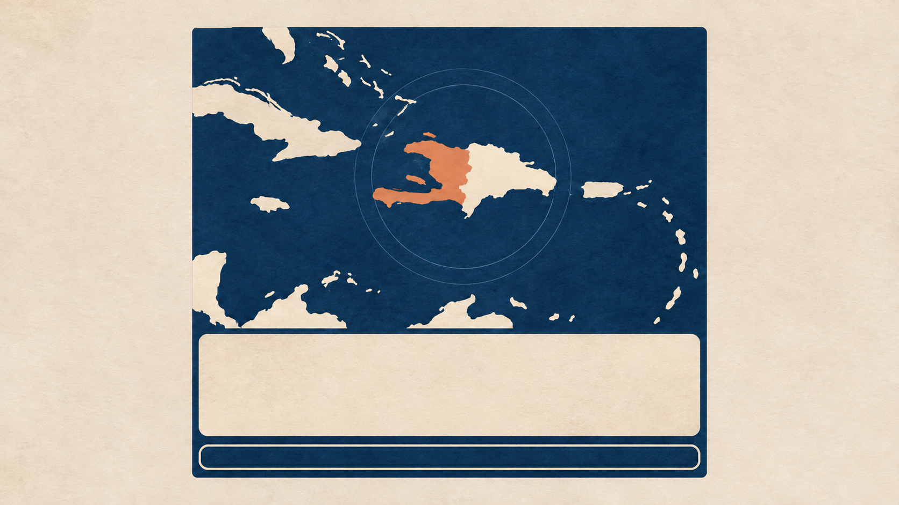

Caribbean · human rights · 17 November 2026
Haiti’s ten-month toll, in the UN record.
The UN human rights office says it documented thousands of people killed or injured by armed violence in Haiti between the beginning of the year and 31 October. The period and definitions stay in the headline record because the figures are not a live count of every incident.

What We Know
OHCHR documented 4,595 people killed and 2,050 injured as a result of armed violence from the beginning of 2026 through 31 October. It separately reported 1,167 killed and 459 injured between July and September.
Why It Matters
A national total can describe scale without explaining distribution, cause or responsibility. Keeping the reporting period and source definition visible helps readers avoid treating a time-bounded documentation count as a real-time dashboard.
What We’re Watching
- How security operations affect civilian protection and accountability.
- Further source detail on methodology, locations and the distinction between armed violence and alleged violations.
- Any new UN or Haitian institutional update that changes the reporting period or totals.